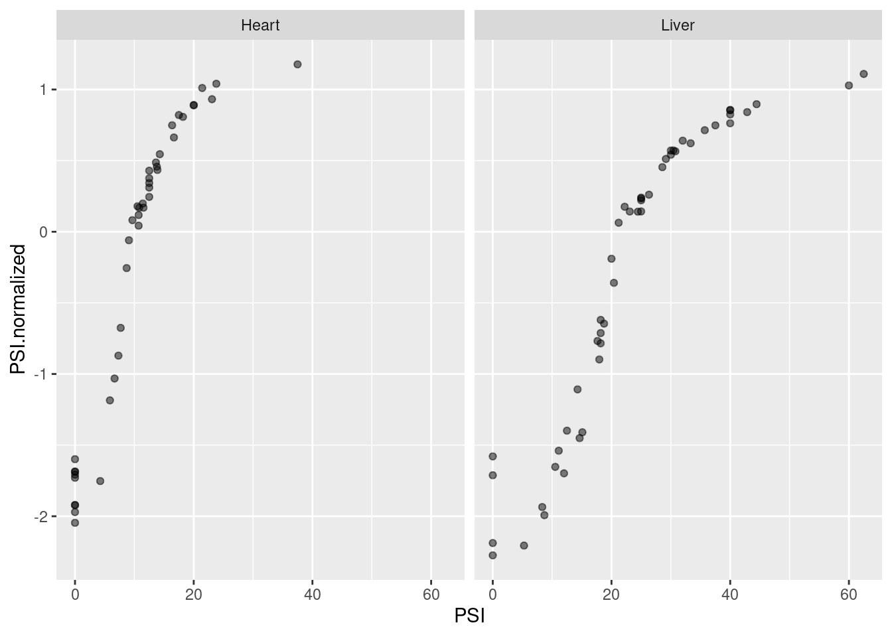
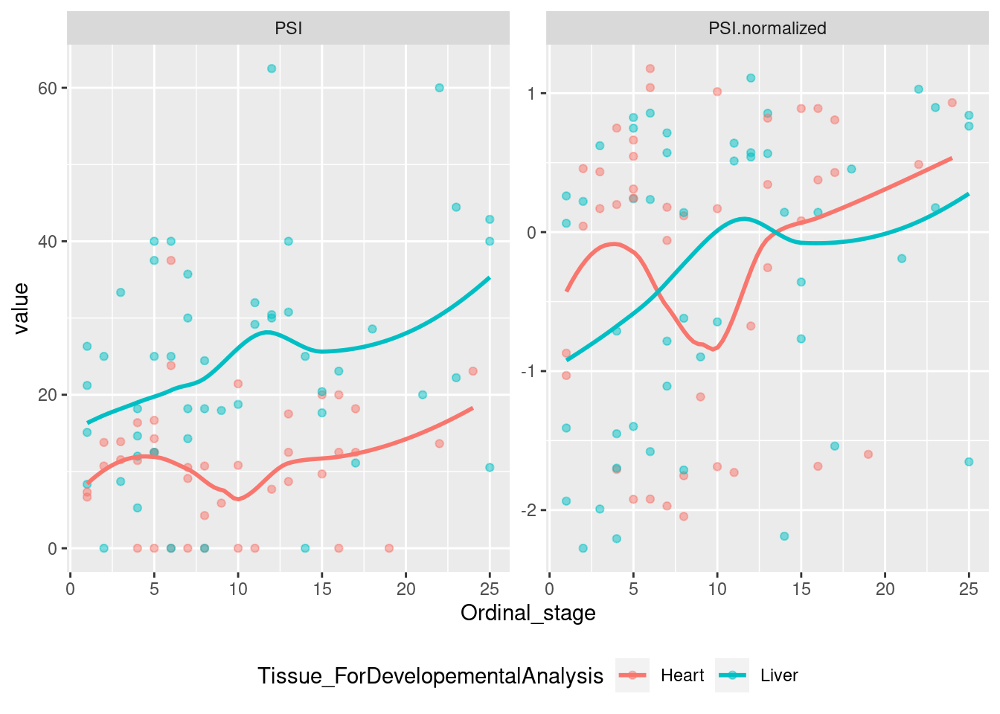
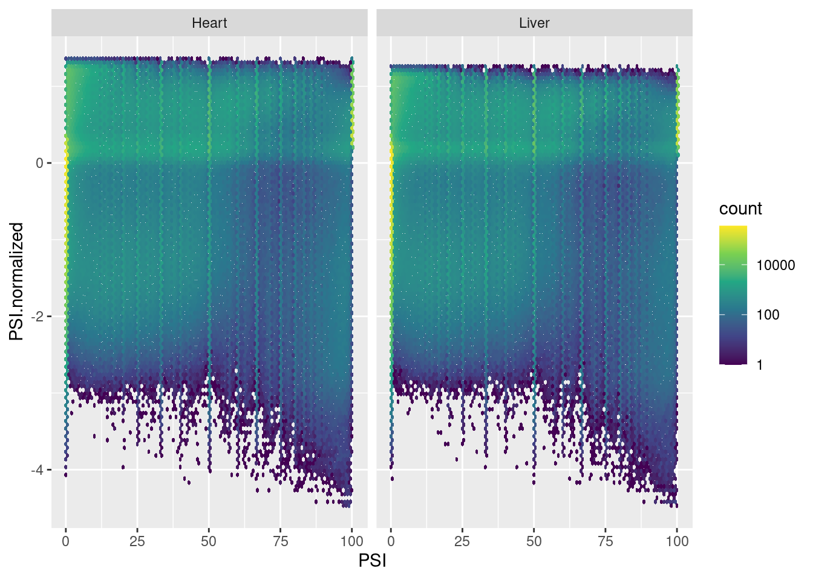
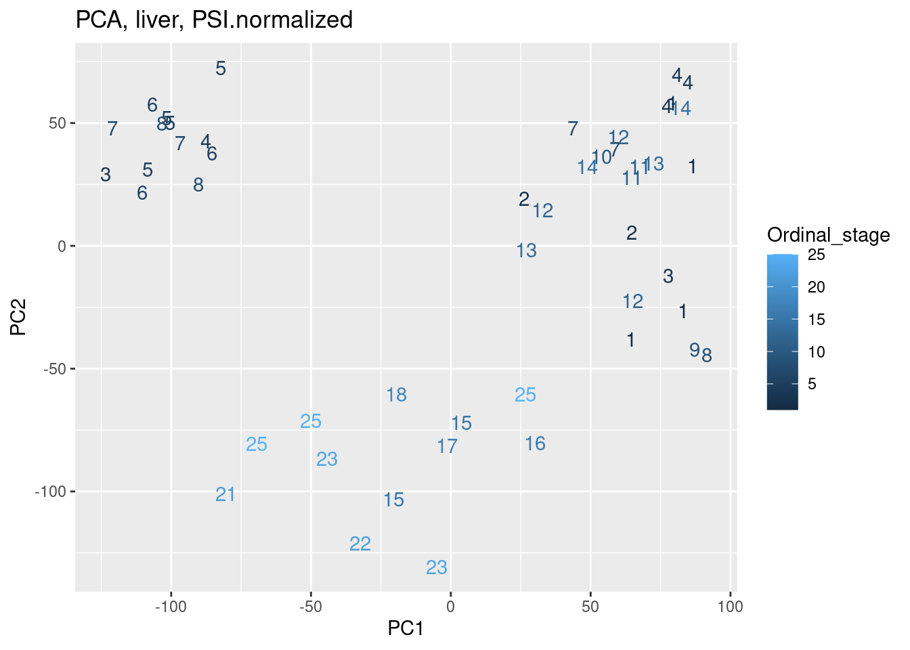
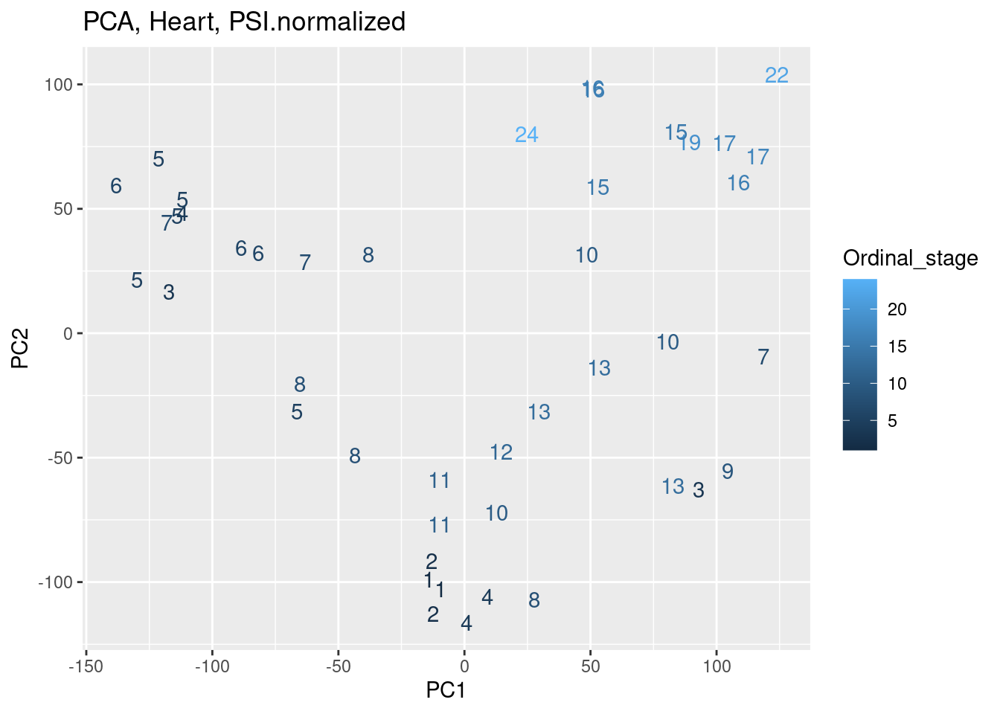
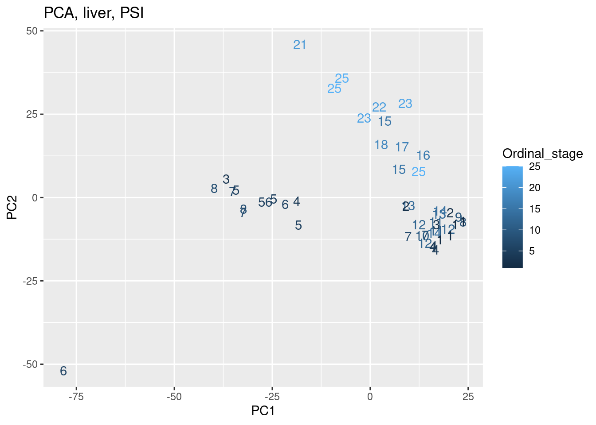
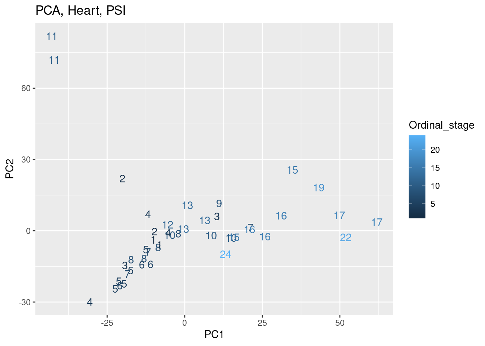
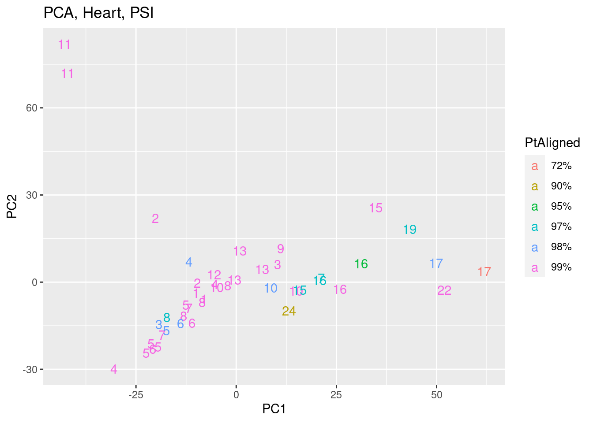

Last updated: 2024-10-03
Checks: 6 1
Knit directory:
2024_comparativesplicing/analysis/
This reproducible R Markdown analysis was created with workflowr (version 1.7.0). The Checks tab describes the reproducibility checks that were applied when the results were created. The Past versions tab lists the development history.
The R Markdown is untracked by Git. To know which version of the R
Markdown file created these results, you’ll want to first commit it to
the Git repo. If you’re still working on the analysis, you can ignore
this warning. When you’re finished, you can run
wflow_publish to commit the R Markdown file and build the
HTML.
Great job! The global environment was empty. Objects defined in the global environment can affect the analysis in your R Markdown file in unknown ways. For reproduciblity it’s best to always run the code in an empty environment.
The command set.seed(19900924) was run prior to running
the code in the R Markdown file. Setting a seed ensures that any results
that rely on randomness, e.g. subsampling or permutations, are
reproducible.
Great job! Recording the operating system, R version, and package versions is critical for reproducibility.
Nice! There were no cached chunks for this analysis, so you can be confident that you successfully produced the results during this run.
Great job! Using relative paths to the files within your workflowr project makes it easier to run your code on other machines.
Great! You are using Git for version control. Tracking code development and connecting the code version to the results is critical for reproducibility.
The results in this page were generated with repository version 172f74b. See the Past versions tab to see a history of the changes made to the R Markdown and HTML files.
Note that you need to be careful to ensure that all relevant files for
the analysis have been committed to Git prior to generating the results
(you can use wflow_publish or
wflow_git_commit). workflowr only checks the R Markdown
file, but you know if there are other scripts or data files that it
depends on. Below is the status of the Git repository when the results
were generated:
Ignored files:
Ignored: .DS_Store
Ignored: .Rhistory
Ignored: .Rproj.user/
Ignored: code/.DS_Store
Ignored: code/.RData
Ignored: code/.Rhistory
Ignored: code/.ipynb_checkpoints/
Ignored: code/.snakemake/
Ignored: code/ChainFiles/
Ignored: code/CordosoMoreira_Fastq/
Ignored: code/Downloads/
Ignored: code/GenomeFiles/
Ignored: code/LiftoverJuncs/
Ignored: code/Log.out
Ignored: code/MazinLeafcutterAnalysis/
Ignored: code/Rplots.pdf
Ignored: code/Session.vim
Ignored: code/config/OldConfigs/2040822_Cordoso_Moreira_SampleList.tsv
Ignored: code/conservation/
Ignored: code/featureCounts/
Ignored: code/kaessmanAnalysis/
Ignored: code/kaessman_AS_dat/
Ignored: code/logs/
Ignored: code/rna-seq/
Ignored: code/scratch/
Ignored: code/scripts/.SpearmanCor_Mazin_log2RPKM.R.swp
Ignored: code/scripts/.ipynb_checkpoints/
Ignored: code/scripts/.vscode/
Ignored: code/snakemake.log
Ignored: data/.DS_Store
Untracked files:
Untracked: analysis/.ipynb_checkpoints/
Untracked: analysis/2024-08-21_SpearmanFromPSI_WithinSpecies.Rmd
Untracked: analysis/2024-08-21_SpearmanFromPSI_WithinSpecies_AllSpecies.Rmd
Untracked: analysis/2024-08-21_SpearmanFromPSI_WithinSpecies_SampleStagesFixed.Rmd
Untracked: analysis/2024-08-24_BioMartLookupGenes.Rmd
Untracked: analysis/2024-08-29_ExploreJuncLiftovers.Rmd
Untracked: analysis/2024-08-29_OrganizeCrossSpeciesTables.Rmd
Untracked: analysis/2024-09-06_UnrpdoctuviveSplicingAndExpression.Rmd
Untracked: analysis/2024-09-09_Organize_ConserveddevASJuncs.Rmd
Untracked: analysis/2024-09-10_RedoMazinJuncAnalysisFixedClassifications.Rmd
Untracked: analysis/2024-09-23_FixMouseEnsemblBed12ToGtf.Rmd
Untracked: analysis/2024-09-30_ContinousExpressionSplicingModel.Rmd
Untracked: analysis/2024-09-30_ContinousTimeSplicingModel.Rmd
Untracked: analysis/20240815_LiftoverJuncsTest.ipynb
Untracked: analysis/Untitled.ipynb
Untracked: code/config/CordosoGenomes_Extra_Gtfs.tsv
Untracked: code/config/GTEx_juncFileList.tsv
Untracked: code/envs/crossmap.yml
Untracked: code/envs/py27.yml
Untracked: code/rules/MazinLeafcutterAnalysis.smk
Untracked: code/scripts/FeatureCounts_to_Mat.R
Untracked: code/scripts/PrepAllJuncsFor_JunctionClassifier.R
Untracked: code/scripts/QQNorm_PSITable_ByTissue.R
Untracked: code/scripts/SpearmanCor_Mazin_LeafcutterPSI.R
Untracked: code/scripts/SpearmanCor_Mazin_log2RPKM.R
Untracked: code/scripts/Untitled.ipynb
Untracked: code/scripts/leafcutter_to_PSI_GTEX.R
Untracked: data/Stages_AsIn_CordosoMoreira.tsv
Untracked: data/Stages_AsIn_CordosoMoreira_Recoded.txt
Untracked: output/Conserved.devAS.leafcutter.tsv.gz
Untracked: output/Ensembl.GeneHumanHomologs.tsv.gz
Untracked: output/Ensembl.TranscriptInfo.tsv.gz
Untracked: output/GTEx_DS_DE_FromChao_CordosoTissuePairs.tsv.gz
Unstaged changes:
Modified: analysis/2024-07-16_Download_CordosoMoreira_Fastq.Rmd
Modified: analysis/index.Rmd
Modified: code/Snakefile
Modified: code/config/ChainFiles.tsv
Modified: code/config/Cordoso_Moreira_SampleList.tsv
Modified: code/config/STAR_Genome_List.tsv
Modified: code/config/samples.tsv
Modified: code/envs/bedparse.yml
Modified: code/module_workflows/snakemake-workflow_rna-seq
Modified: code/rules/LiftoverJuncs.smk
Modified: code/rules/common.smk
Modified: code/scripts/daiuc_leafcutter2
Modified: code/scripts/leafcutter2
Modified: output/QC/ReadCountsPerSamples.tsv
Staged changes:
Modified: .gitmodules
New: code/scripts/daiuc_leafcutter2
Note that any generated files, e.g. HTML, png, CSS, etc., are not included in this status report because it is ok for generated content to have uncommitted changes.
There are no past versions. Publish this analysis with
wflow_publish() to start tracking its development.
Had some wierd results using spearman correlation coef as proxy for effect size (beta) when making the splicing beta vs expression beta scatter plots across developmental time in various tissues/species. Mabye that spearman correlation coef is just not the way to go with leafcutter quantifications. Maybe if we prepare the splicing quantifications a little more carefully (eg standardization and normalization as in sQTL splicing table preperation), then get ’beta’s from linear model (Splicing ~ OrdinalDevelopmentalTime) within each species:tissue combination, the problem will go away. Let’s try setting up that, here (and possibly later incorporating that work into the snakemake).
library(tidyverse)
library(data.table)
library(magrittr)
PSI.table <- read_tsv("../code/rna-seq/SplicingAnalysis/leafcutter/Human_UCSC.hg38_GencodeComprehensive46/juncTableBeds/PSI.sorted.bed.gz")
CordosoSamples <- read_tsv("../code/config/Cordoso_Moreira_SampleList.tsv")
PSI.table.tidy <- PSI.table %>%
dplyr::select(-c(1:3, 5, 6)) %>%
pivot_longer(names_to = "ID", values_to = "PSI", -junc) %>%
inner_join(
CordosoSamples %>%
filter(`Used library?` %in% c("yes", "Yes")) %>%
dplyr::select(ID:ID_Stage, Ordinal_stage, Tissue_ForDevelopementalAnalysis) %>%
separate_rows(Tissue_ForDevelopementalAnalysis, sep=",")
)Now let’s tidy the data by standardizing the rows, qqnorm the columns, within each tissue.
Heart.AndLiver <- PSI.table.tidy %>%
filter(Tissue_ForDevelopementalAnalysis %in% c("Heart", "Liver"))
#test vector for qqnorm function
A <- c(7, 1,2,3,4,4, 5, NaN, 6)
scale(A) [,1]
[1,] 1.5
[2,] -1.5
[3,] -1.0
[4,] -0.5
[5,] 0.0
[6,] 0.0
[7,] 0.5
[8,] NaN
[9,] 1.0
attr(,"scaled:center")
[1] 4
attr(,"scaled:scale")
[1] 2qnorm(dense_rank(A)/(sum(!is.na(A)) + 1))[1] 0.7647097 -1.2206403 -0.7647097 -0.4307273 -0.1397103 -0.1397103 0.1397103
[8] NA 0.4307273Heart.AndLiver.qq.normed <- Heart.AndLiver %>%
group_by(junc, Tissue_ForDevelopementalAnalysis) %>%
mutate(PSI.normalized = scale(PSI)) %>%
mutate(var.PSI = var(PSI, na.rm = T)) %>%
ungroup() %>%
group_by(ID, Tissue_ForDevelopementalAnalysis) %>%
mutate(PSI.normalized = qnorm(dense_rank(PSI.normalized)/(sum(!is.na(PSI.normalized)) + 1))) %>%
ungroup()
Example.Junc.Heart.AndLiver.qq.normed <- Heart.AndLiver.qq.normed %>%
filter(str_detect(junc, "chr20:63931182:63931465"))
Example.Junc.Heart.AndLiver.qq.normed# A tibble: 93 × 10
junc ID PSI ID_Species ID_Organ ID_Stage Ordinal_stage Tissue_ForDevel…
<chr> <chr> <dbl> <chr> <chr> <chr> <dbl> <chr>
1 chr2… Huma… 0 Human Heart 10w 7 Heart
2 chr2… Huma… 35.7 Human Liver 10w 7 Liver
3 chr2… Huma… 18.2 Human Liver 10w 7 Liver
4 chr2… Huma… 10.7 Human Heart 11w 8 Heart
5 chr2… Huma… 0 Human Heart 11w 8 Heart
6 chr2… Huma… 24.4 Human Liver 11w 8 Liver
7 chr2… Huma… 5.88 Human Heart 12w 9 Heart
8 chr2… Huma… 30 Human Liver 18w 12 Liver
9 chr2… Huma… 30.4 Human Liver 18w 12 Liver
10 chr2… Huma… 25 Human Liver 20w 14 Liver
# … with 83 more rows, and 2 more variables: PSI.normalized <dbl>,
# var.PSI <dbl>Example.Junc.Heart.AndLiver.qq.normed %>%
ggplot(aes(x=PSI, y=PSI.normalized)) +
geom_point(alpha=0.5) +
facet_wrap(~Tissue_ForDevelopementalAnalysis)
Example.Junc.Heart.AndLiver.qq.normed %>%
pivot_longer(names_to = "stat", values_to = "value", c("PSI", "PSI.normalized")) %>%
ggplot(aes(x=Ordinal_stage, y=value, color=Tissue_ForDevelopementalAnalysis)) +
geom_point(alpha=0.5) +
geom_smooth(method='loess', se=F) +
facet_wrap(~stat, scales="free") +
theme(legend.position = "bottom")
Example.Junc.Heart.AndLiver.qq.normed %>%
filter(Tissue_ForDevelopementalAnalysis == "Liver") %$%
cor.test(y=PSI.normalized, x=Ordinal_stage, method='s')
Spearman's rank correlation rho
data: Ordinal_stage and PSI.normalized
S = 13226, p-value = 0.0226
alternative hypothesis: true rho is not equal to 0
sample estimates:
rho
0.325217 Example.Junc.Heart.AndLiver.qq.normed %>%
filter(Tissue_ForDevelopementalAnalysis == "Liver") %$%
cor.test(y=PSI, x=Ordinal_stage, method='s')
Spearman's rank correlation rho
data: Ordinal_stage and PSI
S = 13607, p-value = 0.03263
alternative hypothesis: true rho is not equal to 0
sample estimates:
rho
0.3057645 Example.Junc.Heart.AndLiver.qq.normed %>%
filter(Tissue_ForDevelopementalAnalysis == "Liver") %$%
lm(PSI~Ordinal_stage) %>%
summary()
Call:
lm(formula = PSI ~ Ordinal_stage)
Residuals:
Min 1Q Median 3Q Max
-26.438 -7.819 -1.438 7.601 37.421
Coefficients:
Estimate Std. Error t value Pr(>|t|)
(Intercept) 16.9199 3.3443 5.059 6.88e-06 ***
Ordinal_stage 0.6799 0.2712 2.507 0.0157 *
---
Signif. codes: 0 '***' 0.001 '**' 0.01 '*' 0.05 '.' 0.1 ' ' 1
Residual standard error: 13.37 on 47 degrees of freedom
Multiple R-squared: 0.118, Adjusted R-squared: 0.09919
F-statistic: 6.286 on 1 and 47 DF, p-value: 0.01569Heart.AndLiver.qq.normed %>%
filter(var.PSI > 0) %>%
ggplot(aes(x=PSI, y=PSI.normalized)) +
geom_hex(bins=100) +
scale_fill_viridis_c(trans='log10') +
facet_wrap(~Tissue_ForDevelopementalAnalysis) Let’s check PCA goes with time course, before considering linear model (with no covariates).
pca.results <- Heart.AndLiver.qq.normed %>%
filter(var.PSI > 0 & Tissue_ForDevelopementalAnalysis == "Liver") %>%
dplyr::select(ID, junc, PSI.normalized) %>%
pivot_wider(names_from = "ID", values_from = "PSI.normalized") %>%
drop_na() %>%
column_to_rownames("junc") %>%
t() %>%
prcomp()
pca.results$x %>%
as.data.frame() %>%
rownames_to_column("ID") %>%
inner_join(
CordosoSamples %>%
filter(`Used library?` %in% c("yes", "Yes")) %>%
dplyr::select(ID:ID_Stage, Ordinal_stage, Tissue_ForDevelopementalAnalysis) %>%
separate_rows(Tissue_ForDevelopementalAnalysis, sep=",")) %>%
ggplot(aes(x=PC1, y=PC2, color=Ordinal_stage)) +
geom_text(aes(label=Ordinal_stage)) +
labs(title="PCA, liver, PSI.normalized")
pca.results <- Heart.AndLiver.qq.normed %>%
filter(var.PSI > 0 & Tissue_ForDevelopementalAnalysis == "Heart") %>%
dplyr::select(ID, junc, PSI.normalized) %>%
pivot_wider(names_from = "ID", values_from = "PSI.normalized") %>%
drop_na() %>%
column_to_rownames("junc") %>%
t() %>%
prcomp()
pca.results$x %>%
as.data.frame() %>%
rownames_to_column("ID") %>%
inner_join(
CordosoSamples %>%
filter(`Used library?` %in% c("yes", "Yes")) %>%
dplyr::select(ID:ID_Stage, Ordinal_stage, Tissue_ForDevelopementalAnalysis) %>%
separate_rows(Tissue_ForDevelopementalAnalysis, sep=",")) %>%
ggplot(aes(x=PC1, y=PC2, color=Ordinal_stage)) +
geom_text(aes(label=Ordinal_stage)) +
labs(title="PCA, Heart, PSI.normalized")
Let’s compare to PCA just based on PSI (not normalized)…
pca.results <- Heart.AndLiver.qq.normed %>%
filter(var.PSI > 0 & Tissue_ForDevelopementalAnalysis == "Liver") %>%
dplyr::select(ID, junc, PSI) %>%
pivot_wider(names_from = "ID", values_from = "PSI") %>%
drop_na() %>%
column_to_rownames("junc") %>%
scale() %>%
t() %>%
prcomp()
pca.results$x %>%
as.data.frame() %>%
rownames_to_column("ID") %>%
inner_join(
CordosoSamples %>%
filter(`Used library?` %in% c("yes", "Yes")) %>%
dplyr::select(ID:ID_Stage, Ordinal_stage, Tissue_ForDevelopementalAnalysis) %>%
separate_rows(Tissue_ForDevelopementalAnalysis, sep=",")) %>%
ggplot(aes(x=PC1, y=PC2, color=Ordinal_stage)) +
geom_text(aes(label=Ordinal_stage)) +
labs(title="PCA, liver, PSI")
pca.results <- Heart.AndLiver.qq.normed %>%
filter(var.PSI > 0 & Tissue_ForDevelopementalAnalysis == "Heart") %>%
dplyr::select(ID, junc, PSI) %>%
pivot_wider(names_from = "ID", values_from = "PSI") %>%
drop_na() %>%
column_to_rownames("junc") %>%
scale() %>%
t() %>%
prcomp()
pca.results$x %>%
as.data.frame() %>%
rownames_to_column("ID") %>%
inner_join(
CordosoSamples %>%
filter(`Used library?` %in% c("yes", "Yes")) %>%
dplyr::select(ID:ID_Stage, Ordinal_stage, Tissue_ForDevelopementalAnalysis) %>%
separate_rows(Tissue_ForDevelopementalAnalysis, sep=",")) %>%
ggplot(aes(x=PC1, y=PC2, color=Ordinal_stage)) +
geom_text(aes(label=Ordinal_stage)) +
labs(title="PCA, Heart, PSI")
pca.results$x %>%
as.data.frame() %>%
rownames_to_column("ID") %>%
inner_join(
CordosoSamples %>%
filter(`Used library?` %in% c("yes", "Yes")) %>%
dplyr::select(ID:ID_Stage, Ordinal_stage, Tissue_ForDevelopementalAnalysis, RQN, "PtAligned"=`% aligned reads`, "NumReads"=`Total number aligned reads`) %>%
separate_rows(Tissue_ForDevelopementalAnalysis, sep=",")) %>%
ggplot(aes(x=PC1, y=PC2, color=PtAligned)) +
geom_text(aes(label=Ordinal_stage)) +
labs(title="PCA, Heart, PSI") Hmm, I think there might be some other effects, like batch effects playing a role. And the PSI standardization/normalization probably helps a bit.
I forget how base R lm handles missing data by default.
Let’s play around a bit to make things are reasonable.
test.lm.dat <- data.frame(x=c(1,2,3,4,5), y=c(2,NA,4,5,6), y2=c(2,3,NA,NA,6), x2=1)
res <- lm(y~x, data=test.lm.dat)
res.2 <- lm(y2~x, data=test.lm.dat)
res.3 <- lm(y~x2, data=test.lm.dat)
summary(res.2)
Call:
lm(formula = y2 ~ x, data = test.lm.dat)
Residuals:
1 2 5
1.923e-16 -2.564e-16 6.410e-17
Coefficients:
Estimate Std. Error t value Pr(>|t|)
(Intercept) 1.000e+00 3.511e-16 2.848e+15 2.24e-16 ***
x 1.000e+00 1.110e-16 9.007e+15 < 2e-16 ***
---
Signif. codes: 0 '***' 0.001 '**' 0.01 '*' 0.05 '.' 0.1 ' ' 1
Residual standard error: 3.268e-16 on 1 degrees of freedom
(2 observations deleted due to missingness)
Multiple R-squared: 1, Adjusted R-squared: 1
F-statistic: 8.113e+31 on 1 and 1 DF, p-value: < 2.2e-16summary(res.3)
Call:
lm(formula = y ~ x2, data = test.lm.dat)
Residuals:
1 3 4 5
-2.25 -0.25 0.75 1.75
Coefficients: (1 not defined because of singularities)
Estimate Std. Error t value Pr(>|t|)
(Intercept) 4.2500 0.8539 4.977 0.0156 *
x2 NA NA NA NA
---
Signif. codes: 0 '***' 0.001 '**' 0.01 '*' 0.05 '.' 0.1 ' ' 1
Residual standard error: 1.708 on 3 degrees of freedom
(1 observation deleted due to missingness)
sessionInfo()R version 4.2.0 (2022-04-22)
Platform: x86_64-pc-linux-gnu (64-bit)
Running under: CentOS Linux 7 (Core)
Matrix products: default
BLAS/LAPACK: /software/openblas-0.3.13-el7-x86_64/lib/libopenblas_haswellp-r0.3.13.so
locale:
[1] LC_CTYPE=en_US.UTF-8 LC_NUMERIC=C LC_TIME=C
[4] LC_COLLATE=C LC_MONETARY=C LC_MESSAGES=C
[7] LC_PAPER=C LC_NAME=C LC_ADDRESS=C
[10] LC_TELEPHONE=C LC_MEASUREMENT=C LC_IDENTIFICATION=C
attached base packages:
[1] stats graphics grDevices utils datasets methods base
other attached packages:
[1] magrittr_2.0.3 data.table_1.14.2 forcats_0.5.1 stringr_1.4.0
[5] dplyr_1.0.9 purrr_0.3.4 readr_2.1.2 tidyr_1.2.0
[9] tibble_3.1.7 ggplot2_3.3.6 tidyverse_1.3.1
loaded via a namespace (and not attached):
[1] httr_1.4.3 sass_0.4.1 bit64_4.0.5 vroom_1.5.7
[5] jsonlite_1.8.0 viridisLite_0.4.0 splines_4.2.0 modelr_0.1.8
[9] bslib_0.3.1 assertthat_0.2.1 highr_0.9 cellranger_1.1.0
[13] yaml_2.3.5 pillar_1.7.0 backports_1.4.1 lattice_0.20-45
[17] glue_1.6.2 digest_0.6.29 promises_1.2.0.1 rvest_1.0.2
[21] colorspace_2.0-3 htmltools_0.5.2 httpuv_1.6.5 Matrix_1.5-3
[25] pkgconfig_2.0.3 broom_0.8.0 haven_2.5.0 scales_1.3.0
[29] later_1.3.0 tzdb_0.3.0 git2r_0.30.1 mgcv_1.8-40
[33] generics_0.1.2 farver_2.1.0 ellipsis_0.3.2 withr_2.5.0
[37] hexbin_1.28.3 cli_3.6.2 crayon_1.5.1 readxl_1.4.0
[41] evaluate_0.15 fs_1.5.2 fansi_1.0.3 nlme_3.1-157
[45] xml2_1.3.3 tools_4.2.0 hms_1.1.1 lifecycle_1.0.1
[49] munsell_0.5.0 reprex_2.0.1 compiler_4.2.0 jquerylib_0.1.4
[53] rlang_1.0.2 grid_4.2.0 rstudioapi_0.13 labeling_0.4.2
[57] rmarkdown_2.14 gtable_0.3.0 DBI_1.1.2 R6_2.5.1
[61] lubridate_1.8.0 knitr_1.39 fastmap_1.1.0 bit_4.0.4
[65] utf8_1.2.2 workflowr_1.7.0 rprojroot_2.0.3 stringi_1.7.6
[69] parallel_4.2.0 Rcpp_1.0.12 vctrs_0.4.1 dbplyr_2.1.1
[73] tidyselect_1.1.2 xfun_0.30